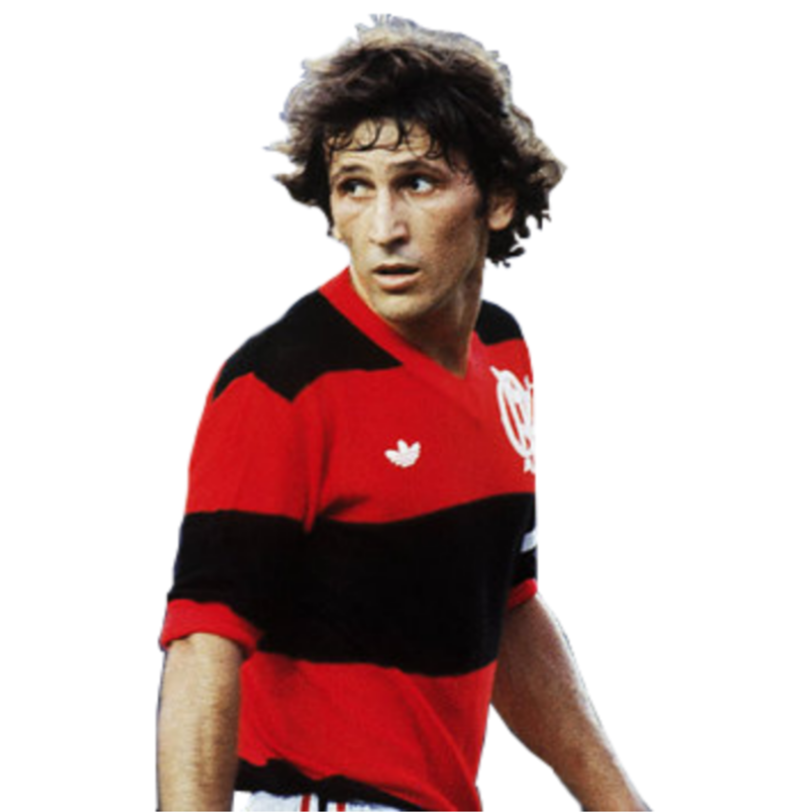
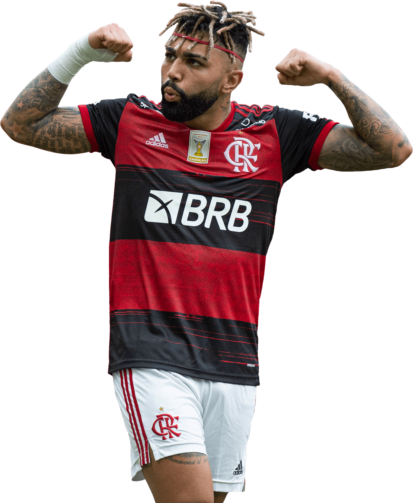
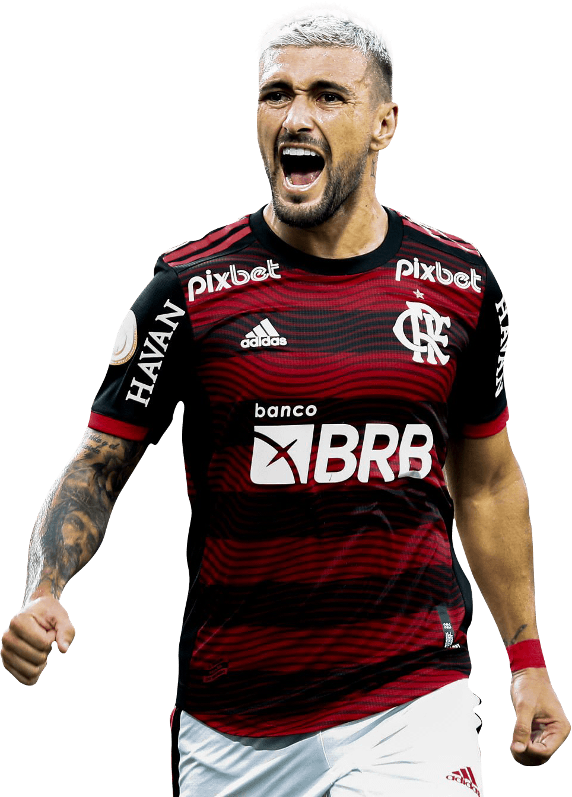

-
ZICO
Arthur Antunes Coimbra
Descrição
Maior ídolo do Flamengo, Zico tem o seu lugar especial na história do clube. Com 509 gols marcados em 732 jogos disputados, o "Galinho"ficou na Gávea entre 1974 a 1983 No período, o eterno camisa 10 conquistou 25 títulos: Copa Libertadores (1981), Copa Intercontinental (1981), Campeonato Brasileiro (1980 1982, 1983)Copa União (1987), Campeonato Carioca (1972, 1974, 1978, 1979, 1979 (especial), 1981, 1986), Taça Guanabara (1972, 1973, 1978, 1979, 1980, 1981, 19821988,1989) e Taça Rio (1978, 1985, 1986).
-
Gabigol
Gabriel Barbosa
Descrição
Gabigol veste a camisa Rubro-Negra desde 2019 e logo se tornou um ídolo do clube. O atacante soma 123 gols em 182 partidas oficiais até o momento. O atacante acumula títulos que ajudaram a levar o Mengão a voltar a figurar entre os gigantes do futebol mundial: Copa Libertadores da América em2019,Recopa Sul-Americana em 2020, Campeonato Brasileiro em 2019 e 2020, Supercopa do Brasil em 2020 e 2021, Campeonato Carioca 2019, 2020 e 2021, TaçaGuanabara 2020 e 2021 e a Taça Rio 2019.
-
Arrasca
Giorgian
Descrição
Em pouco mais de três anos no Flamengo, Arrascaeta já participou de 145 jogos e somou 44 tentos, 51 assistências. Sendo assim, ao todo o craque tem 95 participações diretas em gols pelo Mais Querido. A regularidade do uruguaio resulta em uma participação em gol a cada 112 minutos e uma em finalização a cada 18. Dessa forma, o camisa 14 conquistou a Nação e se tornou peça fundamental do elenco Rubro-Negro.